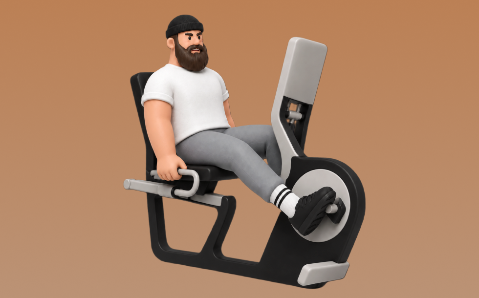

リカンベントバイク

リカンベントバイクとは、マシンを使って「ペダルをこぐ」動作を行い、主に下半身や心肺機能を鍛える有酸素トレーニングです。背もたれにより姿勢が安定し腰への負担が少ないのが特徴で、一定リズムでペダリングを繰り返します。これにより、膝や腰に優しい心肺機能向上が期待できます。
- 対象部位
- 有酸素
- 器具
- マシン
- 記録形式
- 時間
- 別名
- リカンベント / リカンベントバイク / 背もたれバイク / recumbent bike / seated bike / low impact bike
YouTube動画
-
【効果倍増】フィットネスバイクのプロに学ぶ効果的な使い方5選
-
【ジムトレ】何が違うの？フィットネスバイクの種類と効果を解説～背もたれあり・なしバイクを使い分け～
-
背もたれにもたれながら脂肪を燃焼するマシン リカンベントバイクの基本的な使い方!!!
-
【エアロバイク】part1 せめて効率良く脚の筋肉くらい使おうよ @healthunionoda506
-
スピンバイク（STEADY）の効果的な漕ぎ方を専門家に教わってみた
-
怪我で走れないときに超おすすめなバイクトレーニングについて実演解説！【Merach スピンバイク CC 3 Pro】
-
魔法教えます！「お尻に効くバイクの乗り方」有酸素マシン編【トレーニングマシン】
-
【足痩せ】フィットネスバイクで脚を太くしない漕ぎ方のコツ５選
-
いまさら聞けない！～フィットネスマシンの使い方～
-
スピンバイクの効果的な使い方を専門家に聞いてみた
-
リカンベントバイク SFR-40 ステップ・スルー型デザインで乗り降りが容易 背もたれとサイドハンドル付で誰安心全に運動可能
-
【エニタイムフィットネス】初心者が最初に覚えるべき筋トレマシンの使い方を徹底解説！
-
【保存版】初めてのベンチプレスのやり方（初心者向け）
-
バイクで脂肪燃焼!! でも足は太くしたいない!! そんな方へ!!
-
【エニタイム】ジムでバイクしか使っていない人へプロがアドバイス！
-
アップライトバイクの基本的な使い方
-
ロングライドを楽にするためのフォームの意識の仕方
-
How To Properly Use The Recumbent Bike
-
バックエクステンション（トレーニング動画）
-
リア・デルトイド（トレーニング動画）
-
ラットプルダウン（トレーニング動画）
-
STEADY「スピンバイクPro」を漕いでみた【生配信】
-
【筋トレ】筋肉が付き、体脂肪が燃える有酸素運動のやり方。
-
トレッドミル（トレーニング動画）
-
【試乗動画】家庭用フィットネスバイク「U50-V2」〈家庭用MATRIX〉《ジョンソンヘルステック》
-
クロストレーナー（トレーニング動画）
-
新有酸素トレーニングマシン SPARCの使い方!!
-
【保存版】バーベルスクワットのやり方【ジム初心者向け】
YouTubeショート
-
"How To" Recumbent Bike
-
【誰でもわかるマシンの使い方】エアロバイク編#shorts
-
エアロバイクダイエット検証！97キロから何キロになるのか！徹底レビュー！
-
RECUMBENT BIKE TUTORIAL 🚲 // Use this back supported cardio workout at Planet Fitness!
-
2週間エアロバイクを漕ぎ続けた結果がやばかった！#プレ花嫁 #花嫁ダイエット #花嫁美容 #公開ダイエット#有酸素運動#エアロバイク
-
【エアロバイクって実際どうなの？！】#ダイエット #ダイエットビフォーアフター #有酸素運動#エアロバイク#有酸素#筋トレ#ダイエット記録 #100日企画 #aespa#カリナ
-
アブドミナルクランチの使い方
-
マルチプレスセットアップ&動作【Matrix】Versa-dual
動作方法
- ウォームアップで心拍を段階的に上げる
- 目的に合わせてペースを設定する
- 終了後はクールダウンで整える
動作ポイント
- 呼吸を止めない
- 開始直後に追い込みすぎない
ワンポイントアドバイス
- 体調に合わせて時間や強度を調整する
- ペースより継続を優先する
目的別回数設定
目的や体力に応じた一般的な目安です。無理のない範囲で調整してください。
- 筋力アップ
- 高強度 20〜60秒
- 筋肥大
- 中強度 10〜20分
- 持久力アップ
- 低〜中強度 20〜60分
YouTube動画について
動画はYouTubeの公開情報をもとに表示しています。内容は投稿者によるもので、Biggrによる監修ではありません。
アプリを入手
筋トレやトレーニングの記録はBiggrにお任せください。今すぐ無料で使い始められます。